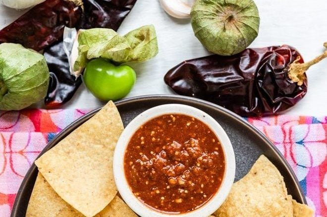

The best food in the world might just have to be tacos. I can't think of another food that I never get sick of. They are versatile, and it really all comes down to the ingredients. The best addition to tacos? Pineapple. Try these tacos al pastor and tell me I'm wrong!
I love chipotle as much as the next blue collar guy. $10 for a giant bowl of food that always ends up giving you a stomach ache afterwards, if you manage to finish it all that is. But you know what doesn't give you a stomach ache? Guacamole. Yes, someone made a copycat of Chipotle guacamole. I found it, and now it's yours.
Guacamole might be a nice breath of fresh air when it comes to dipping chips, but some people (such as myself!), like things to always be spiced up a notch. Or two. There is a copycat of Chipotle's hot salsa. I made this frequently and it's hard to tell the difference!
All this mexican heritage food and I'm starting to feel like this list needs something more italian. Americanized-italian perhaps? Who really knows where pizza came from, that's not the point of this list. The point of this list is to share to most basic, yet delicious, home-made pizza that takes only an hour (if you're really hungry and go fast).